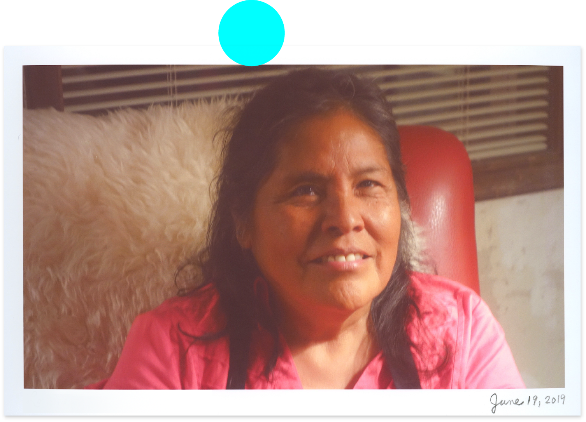
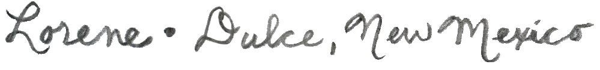

Listen to Lorene
“Did you know thousands of years ago what you see in New Mexico was the ocean’s floor,” said a two-spirited indigenous person. I had no idea. The spirit of New Mexico feels native, ancestral, and the vast beauty of the high desert is almost too much to comprehend. What keeps me going back to this state is my relationships with indigenous people. The honor of learning and sharing time with folks at the Jicarilla Apache and Taos Pueblo reservation is such a joy. Another reason I keep returning is to witness off-the-grid living of the Greater World Earthship community.
Listen to the entire series wherever you listen to audio: iTunes, Stitcher, Soundcloud, Spotify and many others.
© Kyana Gordon